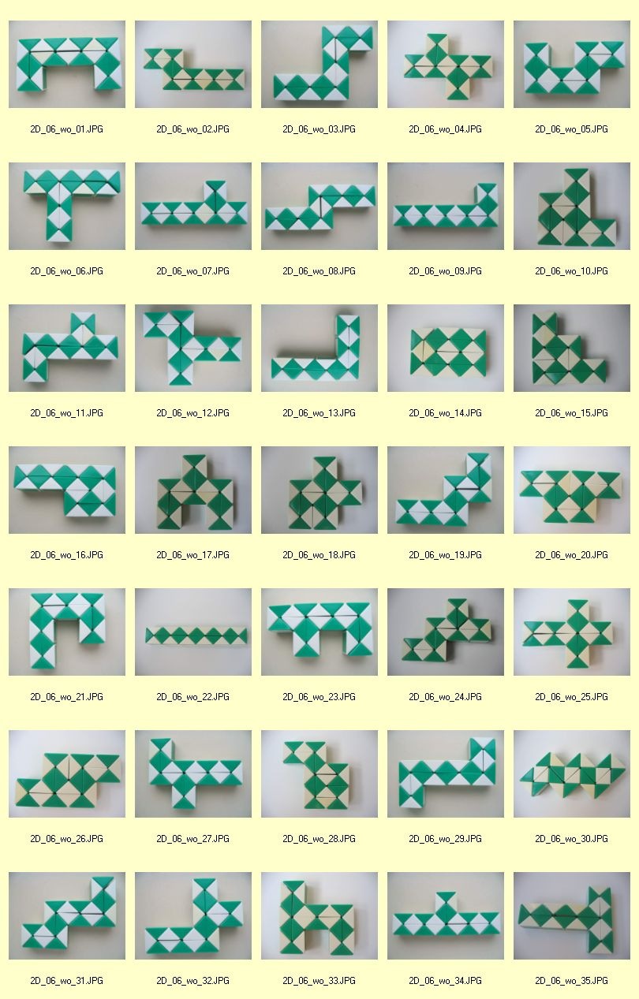
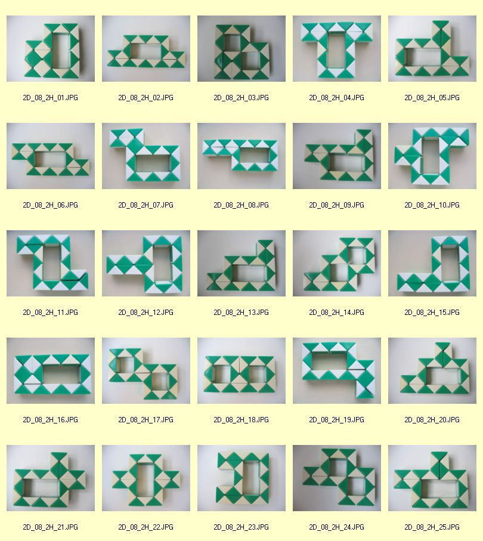
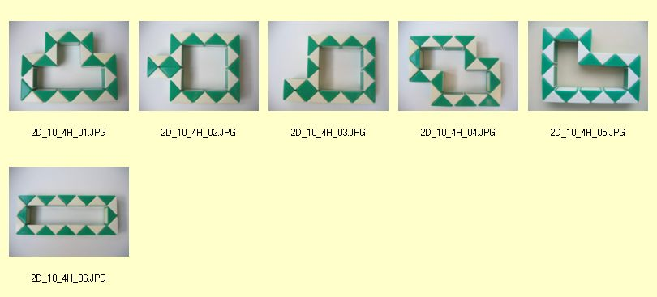
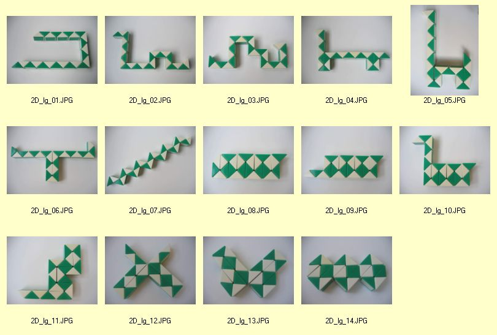
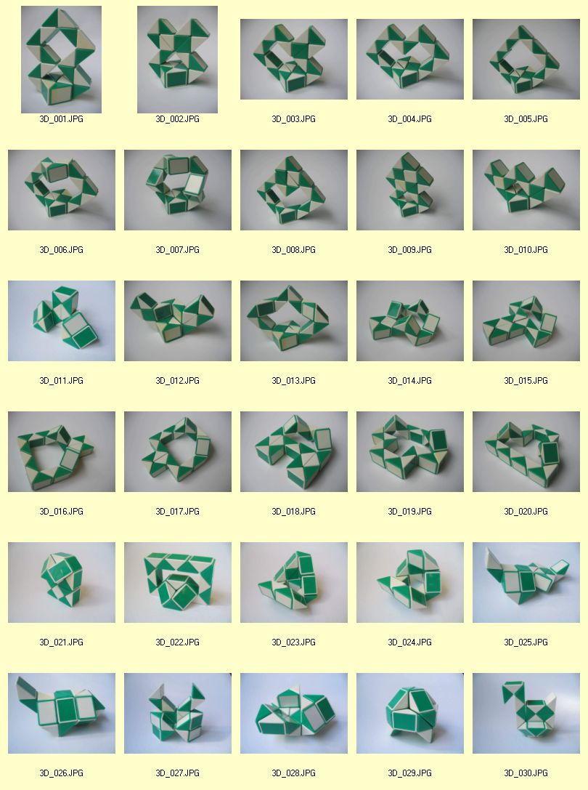
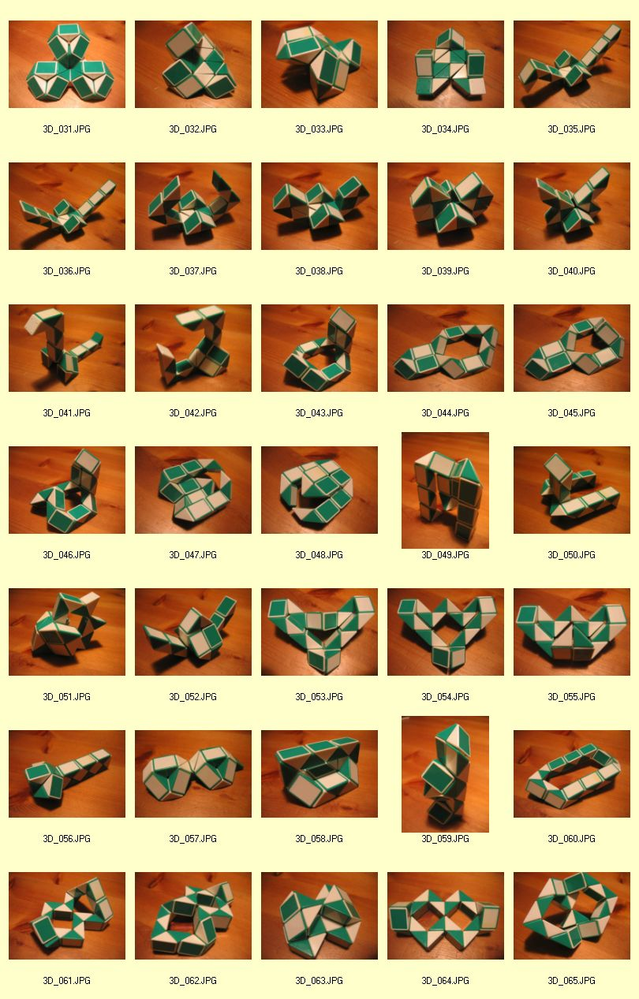
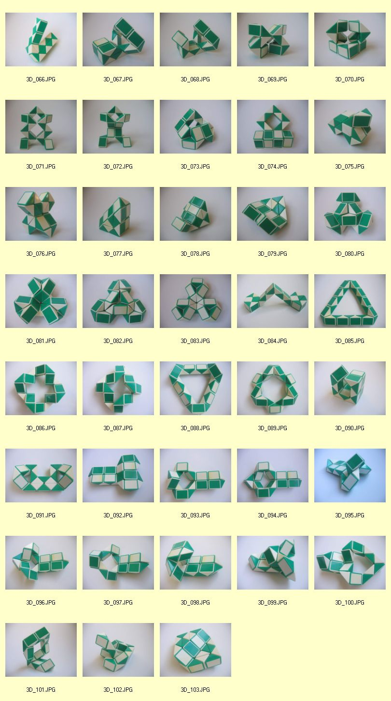
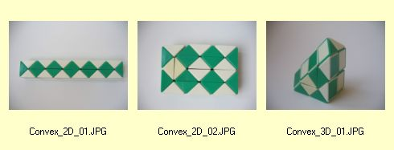
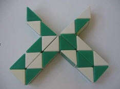

Alle Formen und Figuren auf dieser Seite sind von Victor Stok aus Driebergen, Niederlande.
Er hat "Rubik's Snake" zusätzlich mathematisch analysiert. Dabei sind interessante Erkenntnisse und eine unglaublich vielfältige Sammlung von Formen und Figuren herausgekommen.
Danke, Victor!
Die folgenden Formen sind in drei Hauptkategorien unterteilt:
- 2D-Formen ("in einer Ebene")
- 3D-Formen ("räumlich")
- Konvexe Formen
Die 2D-Formen sind sortiert nach der Anzahl von eingeschlossenen Quadraten (Kantenlänge=längste Dreieckseite), die entweder kein Loch oder bis maximal sechs innere quadratische Löcher enthalten. Victor ist der Meinung, dass er alle 2D-Formen ermittelt hat, bei welchen die "Rubik's Snake" in sich vollständig geschlossen ist.
Die 3D-Formen enthalten eine Reihe von außerordentlich schönen und symmetrischen Figuren.
Konvexe Formen sind durch folgende Eigenschaft gekennzeichnet: Von jedem Punkt der Form (im Inneren oder auf der Oberfläche) erreicht man jeden anderen beliebigen Punkt mit einer Verbindungstrecke, die ausschließlich im Inneren oder an der Oberfläche der Form verläuft. Victor ist wiederum der Meinung, dass er alle konvexe Formen ermittelt hat. Es gibt (nur!) genau drei solcher Formen - zwei in 2D und eine in 3D - und keine weitere! Victor's Behauptung und Aufgabe an alle Interessierten: Mehr als die angegebenen 2D- und konvexen Formen gibt es nicht! Sollte jemand doch etwas anderes herausfinden - bitte melden!
Victor benutzt für die Notation der 2D-Figuren eine Beschreibung der Drehungen für alle Prismen, siehe unten.
2D: sechs Quadrate, ohne Loch:
2D: sieben Quadrate, ein Loch:

2D: acht Quadrate, zwei Löcher:
2D: neun Quadrate, drei Löcher:

2D: zehn Quadrate, vier Löcher:
2D: elf Quadrate, fünf Löcher:

2D: zwölf Quadrate, sechs Löcher:

2D: weitere Formen und Figuren
3D: Teil 1
3D: Teil 2
3D: Teil 3
2D und 3D Konvexe Formen:
Beschreibung von 2D-Formen von Victor:
Bei 2D-Formen ist jedes der 23 Prismas entweder gerade oder um 90° gedreht.
Als Beschreibung der Lage eines Prismas bietet sich dafür die 0 und die 2 an. Die 0 steht für gerade und die 2 für ein um 90° gedrehtes Prisma.
Die folgende Figur
kann somit wie folgt notiert werden: 00200022000200022000200
In diesem Fall werden also die Drehungen und nicht die Prismen selbst beschrieben. Dadurch kommen die 23 Ziffern zustande.
Für eine bessere Lesbarkeit werden Gruppen von je fünf Drehungen getrennt durch ein Leerzeichen gebildet, also für die obige Figur: 00200 02200 02000 22000 200
Theoretisch existieren 8388608 2D-Figuren. Die Anzahl ergibt sich aus den 23 Prismen mit jeweils zwei möglichen Drehungen, also:
2x2x2x2x2x2x2x2x2x2x2x2x2x2x2x2x2x2x2x2x2x2x2= 8388608
Wie lässt sich jetzt aber die exakte Anzahl von möglichen Figuren errechnen? Denn es gibt auch praktisch unmögliche Drehungen zueinander, z. B. kann keine Figur mit 222 anfangen.
Bemerkung: Die Ziffern 0 und 2 sind so gewählt, dass auch für die 3D-Figuren eine Beschreibung möglich ist. Dann kommen noch die beiden anderen Stellungen mit 1 und 1' hinzu. Diese beschreiben dann die beiden anderen Stellungen von 45° bzw. -45° in Uhrzeiger- bzw. Gegenuhrzeigerrichtung.
Anmerkung von Thomas: Ich verwende die Ziffern (0) 1, 2 und 3 mit den Winkeln (0°) 90°, 180° und 270°, da eine vollständige Drehung eines Prismas insgesamt 360° beträgt.